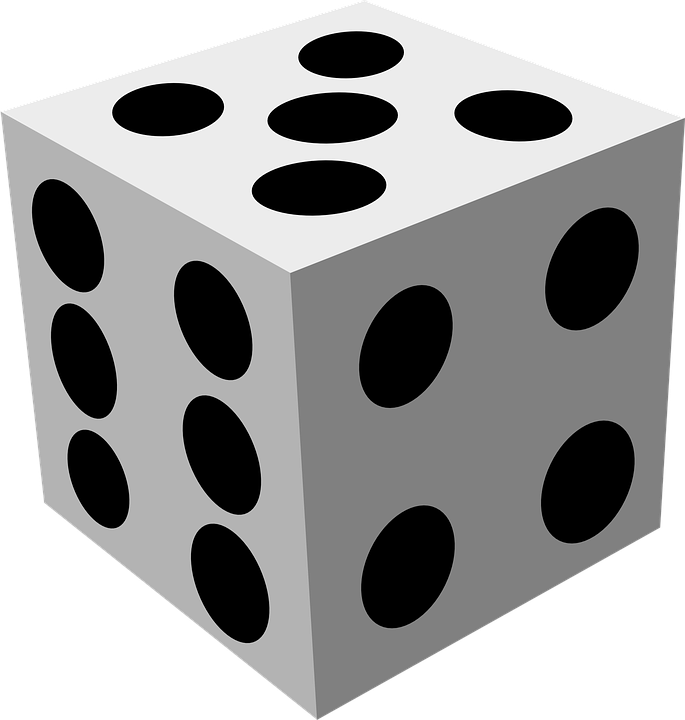
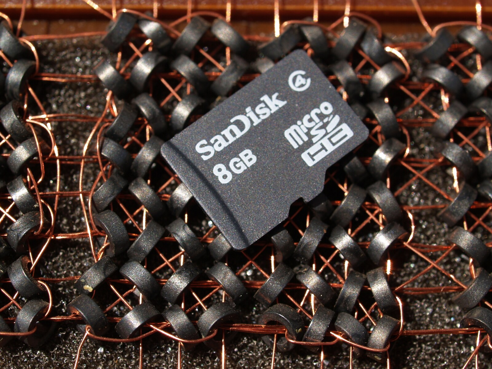

Introduction to Computing for the Social Sciences Session 2 – Information Coding
David Garcia Winter Semester 2026-2027
Course Outline
Session 1: Introduction
Session 2: Information Coding
Session 3: Data Structures
Session 4: Programming
Session 5: Algorithms
Session 6: Recursion
Session 7: Sorting Algorithms
Session 8: Time Complexity
Session 9: Theoretical Computer Science
Session 10: Machine Learning
Session 11: Databases
Session 12: Parallel Programming
Session 13: Social Science Applications
Session 14: Exam Review
Outline
Information Coding
Conversion Between Number Coding Systems
Character Coding
Python Data Types and Binary Operations
Information coding matters (I)
Excel renaming genes An audit of 3,597 published genetics papers found that 704 of them, one in five, contained corrupted gene names. The spreadsheet had read SEPT2 as a date and stored it as 2-Sep; identifiers like 2310009E13 became 2.31E+13.
20% of papers affected
0 warnings shown
27 genes renamed in 2020 so the software would stop breaking them
What is a spreadsheet actually storing when it shows you SEPT2, and who decided what it means?
Ziemann, Eren & El-Osta, Genome Biology (2016); Bruford et al., Nature Genetics (2020)
Information coding matters (II)
The stock index that lost half of its value The Vancouver Stock Exchange index opened at 1000.000 in 1982 and was recomputed after every trade. Months later it read 524.811, while the shares it tracked had risen. Each recomputation truncated the fourth decimal instead of rounding, thousands of times a day.
1000.000: when launced launch in Jan 1982
524.811: value displayed in Nov 1983
1098.892: true value, once recomputed
Why can’t a computer store 0.1 exactly, and what does that cost after a million additions?
Toronto Star, 29 Nov 1983; discussed in Higham, Accuracy and Stability of Numerical Algorithms
What is information?
In Computer Science, information is the representation of knowledge
Encoding information
Information is encoded by recording changes in knowledge. For example, what we learn from the answer to a question
Measuring information in bits
Each yes/no question gives us a bit of information.
How many bits do we learn from the result of a dice throw?
This depends on how we ask to find out the dice result, i.e. how we encode the information

Measuring information in bits
Each yes/no question gives us a bit of information.
How many bits do we learn from the result of a dice throw?
This depends on how we ask to find out the dice result, i.e. how we encode the information
On average we will need to ask 20/6 questions (3.33). Can we do better?
Encoding information more efficiently
This way we only need 16/6 questions on average (2.66)
Each yes/no question doubles the number of possibilities,
e.g. a result with 8 equally likely possibilities has 3 bits of information
Encoding information more efficiently
Encoding the result of a dice (1-6) with three bits (0 or 1)
Prefix code: no coding is a prefix of another, allows unambiguous encoding
Decoding information
To decode, we translate codes back to the values they mean
For example, if we encoded the following bits, what were the results of the dice?
1101000100101
Storing information digitally
Smallest physical information unit is 1 bit
no/yes is represented as 0/1
memory: a capacitor or a capacitor and several transistors
hard disk: magnetization
Smallest logical unit is 1 byte: 8 bit
logical means that it can be accesses with a memory address and operated on
processors can usually only address entire bytes, i.e. information in chunks of 8 bits

How memory works
Bits in chips are encoded as voltage values (e.g. 0 = 0 Volts, 1 = +5 Volts)
Memory chips have three inputs
A line called “select” to activate
A line to specify read/write
An address line with several bits to select the row where to read/write
The address decoder activates the corresponding row of the chip
The data bus outputs the content of the row (read case) or contains the new value (write case)
Conversion of a decimalinteger \(n \geq 0\) to binary notation
Procedure DECIMAL-TO-BINARY(n)
Inputs:n: a positive integer written in decimal
Result: the binary digits of n, written as xk-1 … x1x0k ← 0
Whilen > 0:
xk ← nmod 2
n ← ⌊n/2⌋
k ← k + 1
returnxk-1 … x1x0
Example
Division
Quotient
Remainder
190 : 2 =
95
0
95 : 2 =
47
1
47 : 2 =
23
1
23 : 2 =
11
1
11 : 2 =
5
1
5 : 2 =
2
1
2 : 2 =
1
0
1 : 2 =
0
1
\(190_{10} = 1011\,1110_2\)
Conversions Between Number Systems: Algorithm
Generalization: conversion of a decimal integer \(n \geq 0\) to base-\(\beta\) notation
Procedure DECIMAL-TO-BASE(n, β)
Inputs:n: a positive integer written in decimal
β: the target base
Result: the digits of n in base β, written as xk-1 … x1x0k ← 0
Whilen > 0:
xk ← nmodβn ← ⌊n/β⌋
k ← k + 1
returnxk-1 … x1x0
Converting between power of 2 bases
Conversion of octal to binary notation
every digit 0 - 7 can be represented exactly by 3 binary digits
allows for elegant and fast conversion digit by digit using blocks of 3 binary digits
Examples
\(47_8 = 39_{10} = ?_2\)
Converting between power of 2 bases
Conversion of octal to binary notation
every digit 0 – 7 can be represented exactly by 3 binary digits
allows for elegant and fast conversion digit by digit using blocks of 3 binary digits
Conversion of a fractional number \(n\)with only decimal places to binary notation
notation of a binary number with decimal places is \(0.x_{-1} x_{-2} \dots x_{-k}\)
Procedure FRACTION-TO-BINARY(n)
Inputs:n: a number written in decimal, with 0 < n < 1
Result: the binary digits of n, written as 0.x-1x-2 … x-(k-1)k ← 1
Whilen > 0:
x-k ← ⌊2n⌋
n ← 2n - x-kk ← k + 1
return 0.x-1x-2 … x-(k-1)
Example:
Value
0.34375
× 2 = 0.6875
0
0.6875
× 2 = 1.375
1
0.375
× 2 = 0.75
0
0.75
× 2 = 1.5
1
0.5
× 2 = 1.0
1
\(0.34375_{10} = 0.01011_2\)
Negative Binary Numbers: One’s Complement
Ones’ Complement
leading bit codes the sign (0: +, 1: –)
\(k-1\) digits to represent the absolute value of a given number
Gulf War, 1991: Iraqi Scud missile hit American barracks in Dhahran, Saudi Arabia, killing 28 soldiers and wounding 260.
“A 24-bit representation of 0.1 was used to multiply the clocktime, yielding a result in a pair of 24-bit registers. This was transformed into a 48-bit floating-point number.”
Ariane 5 maiden flight, 1996: Rocket exploded 39 seconds after liftoff.
Error when converting horizontal velocity from a 64-bit floating point number to a 16-bit signed integer between the software of Ariane 5 and Ariane 4.
COBOL is a very old programming language, designed in 1959 but still very used in banking, finance, and government
COBOL does no rounding by default on fractions, minimizing the risk of rounding errors
Grace Hopper, a.k.a. grandma COBOL, was an American military computer scientist that invented machine-independent programming languages, COBOL being one of the first
American Standard Code for Information Interchange
Standard since 1963, still in use today
initially 7 bit code for tele printers, all codes of US keyboard in one byte
128 characters, 33 control characters, 95 printable characters
Missing characters for other keyboards
Unicode
In ASCII, not all possible characters can be represented, e.g., kanji, chinese
Solution: development of standardized Unicode
simultaneous representation of all possible characters
version 1.0 in 1991 with a 16-bit code space (65 536 code points)
2022 version (15.0) has 149,186 characters
Notation: U+ and at least 4 hexadecimal numbers
e.g.: U+00DF = ß
Representation of Unicode
3 bytes are necessary for all possible characters
wasting memory in many geographical regions, e.g. Europe
Definition of Unicode Transformation Formats (UTF) as solution
UTF-16
2 byte per characters but still wastes memory
other areas are covered by combination of UTF-16 characters
UTF-8
1 byte per character, covers most important Western characters
Compatible with ASCII Codes
other characters use a sequence of up to four bytes
Usual Character Encoding Issues
Character encoding is a usual source of problems with social science data
Try to control coding in documentation and keep it general (e.g. UTF-8)
>>> u = chr(40960) + 'abcd' + chr(1972)
>>> u.encode('utf-8')
b'\xea\x80\x80abcd\xde\xb4'
>>> u.encode('ascii')
Traceback (most recent call last):
File "<stdin>", line 1, in <module>
UnicodeEncodeError: 'ascii' codec can't encode character '\ua000' in position 0:
ordinal not in range(128)
>>> u.encode('ascii', 'ignore')
b'abcd'
>>> u.encode('ascii', 'replace')
b'?abcd?'
>>> u.encode('ascii', 'xmlcharrefreplace')
b'ꀀabcd޴'
Python Data Types and Binary Operations
Information Coding
Conversion Between Number Coding Systems
Character Coding
Python Data Types and Binary Operations
Primitive Data Types
Type
Bits
Coding
Minimum
Maximum
boolean
1/8
truth value
false
true
byte
8
two’s complement
-128
127
short
16
two’s complement
-32 768
32 767
int
32
two’s complement
-2 147 483 648
2 147 483 647
long
64
two’s complement
-9 223 372 036 854 775 808
9 223 372 036 854 775 807
char
8-32
UTF-8 (standard)
0 (U+0000)
1 114 111 (U+10FFFF)
float
32
IEEE 754
double
64
IEEE 754
These are the primitive types of languages like C and Java. Python hides them behind bool, int (unbounded), float (a 64-bit double) and str (Unicode text).
Type Conversion
Expressions can be turned into other types
general rules are:
conversion to a “larger” data type can be done without loss of precision
conversion to a “smaller” data type usually leads to loss of precision
conversion of a floating point number to an integer cuts the decimal places


Social Science Application: the secret of Twitter snowflakes
"id": 10765432100123456789https://github.com/oduwsdl/tweetedat
https://ws-dl.blogspot.com/2019/08/2019-08-03-tweetedat-finding-tweet.html